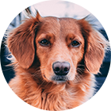
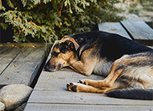

Питомник породистых
животных рядом
с вашим домом
Животные как дети - им нужны мы.
О питомнике
Наш питомник - не просто дом для животных,
a семья из разных пород собак и кошек.
- Лучшие представители своей породы
- Сбалансированый рацион питания питомца
- Ежедевный уход и тренировки
- Веселье, свежий воздух и отличная компания
Наши породы
Французский бульдог
Идеальный вариант городской собаки — они входят в тройку самых популярных собак на планете. Любят короткие прогулки и хорошо поспать.
Посмотреть щенковЗолотистый ретривер
Добродушные, ориентированные на людей собаки. Они отлично ведут себя с детьми и больными. Могут быть повадырями.
Посмотреть щенковЧау-чау

Эти собаки с характером. Они всегда серьезны но временами проявляют характер.
Посмотреть щенковПудель

Активные и компанейские собаки. Любят много гулять, обладают отличным чувством юмора.
Посмотреть щенковОтзывы хозяев
Татьяна Зверева
27.02.2018Хочу выразить большую благодарность Вам за это чудо — малыша, который появился у нас в семье. Деликатный, милый, ласковый и нежный белоснежный Уник, в которого я влюбилась с первого взгляда, увидев его фотографию на сайте Вашего питомника. Очень умный малыш!
Больше отзывов можно найти у нас в группе ВК
Все о животных
Мы ведем активный блог про наших животных в социальныхсетях — присоединяйтесь к нам. Полезные матьериалы про обучение, дрессировку, питание.
Правильный рацион для взрослого пса
Читать статью

Бывает ли собачья депрессия?
Читать статьюКонтакты
Адрес
г.Санкт-Петербург, ул. Кирочная 61
petshelp@pets.ru
Режим работы
Каждый день с 10:00 до 22:00
Телефон
+7 (925) 256 78 96
Мы принимаем звонки с 10:00 до 21:00